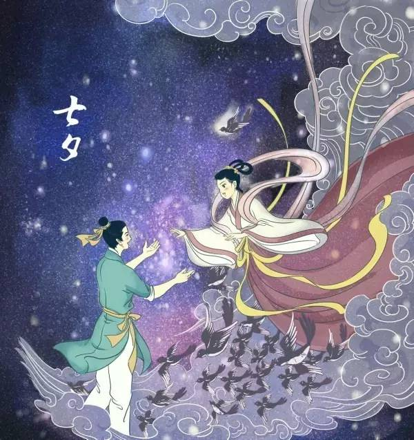
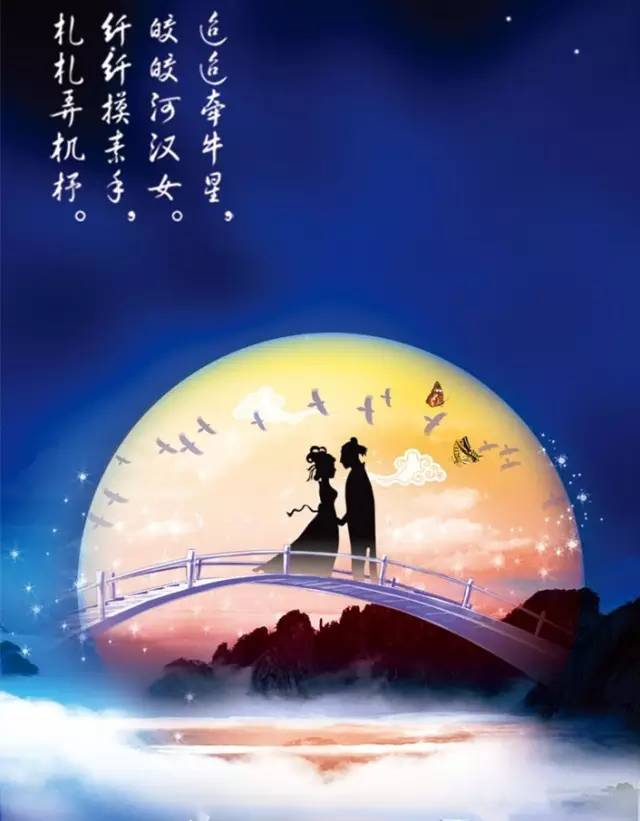

七夕 | 牛郎织女，鹊桥几度，天上人间，朝朝暮暮
 319
319
农历七月七日是传统节日中的七夕，又被称为“乞巧节”“女儿节”“双星节”，今天渐渐成为中国的“情人节”。
《说文解字》：“七，阳之正也。”《三五历记》：“数起于一，主于三，成于五，盛于七。”在古人的观念中，“七”这个数字是阳数、天数，是吉祥的数字，而农历七月七日又被称为“重七”。
“夕”是傍晚的意思。“七夕”来源于传说中的牛郎和织女，在每年的农历七月七日傍晚跨天河（银河）相聚。传说在七夕的夜晚，抬头可以看到牛郎织女在银河相会，或在瓜果架下可偷听到两人在天上相会时的情话。
天上星辰，人间夫妻
民歌里唱的“七月里来七月七呀，天上的牛郎配织女”，在中国古代四大传说中，“牛郎织女”的传说影响最大、最广泛，而且形成了一年一度的七夕节。
“牛郎织女”的传说是古人依据星象创造的。牛郎和织女原本是天空中的两颗星辰，分别在银河两岸，东西分置，通常称作“牵牛星（牛郎星）”和“织女星”，现代天文学上分别称为天鹰座和天琴座。
天鹰座由于三星并成一线，牛郎星是其中最亮的一颗，民间称其为扁担星，是牛郎用扁担挑着两个孩子的形象，牛郎星东南有六颗牛宿星，人们看作是牛郎牵的牛。
天琴座有三颗构成三角形的星，被人们想象为织女织布的梭子，织女星东方的四颗构成四边形的星，被人们看作是织女用的织布机。
星辰的名字和形象都是人间生活的反映。先民有把自然物体人格化的原始思维以及星辰崇拜、天人合一的观念，所以把天空中的星辰演绎成了人间悲欢离合的故事。
牛郎、织女是中国几千年来男耕女织、传统田园生活的象征。牛耕的发明，大大节省了人力，提高了耕作速度与质量，推动了当时生产力的发展，而养蚕、纺织改变了人们的衣着面貌。
这两点奠定了古代中国的农业文明，塑造了中国人几千年的生活方式。而七夕时农业生产开始丰收，古人就有祭祀田祖（公）和庆祝牛的生日的风俗。
传统的农耕社会中，处处离不开牛，作为运输工具时，人赶着牛；作为交通工具时，人骑着牛；作为耕作工具时，则是一人牵着牛（另有一人在后面扶犁）。
在中国的农业文明中，人与牛的关系如此密切，牛如此被看重，以至于在传说故事中，是牛撮合了牛郎和织女的婚姻，并尽自己的最大力量来保护这桩婚姻，所以民间最后把牛郎织女相会的七夕来作为牛的生日。
谚语说，“一家一灶过日子”，“一牛一犁好耕田”，这就是传统自耕农的生活，也是传统农业文明塑造的生活方式。为什么我们听到黄梅戏《天仙配》中“你耕田来我织布”“我挑水来你浇园”，这类表达恩爱的唱词会怦然心动，那是我们的文化基因在发挥影响。

天上鹊桥，人间乞巧
七夕牛郎织女相会，在传说中还需要喜鹊在天河上搭桥，也就是“鹊桥”。桥梁是超越自然障碍的建筑，变阻隔为通途，起连接、沟通作用，它促进人际交往，当然也为男女之爱创造方便条件，正因为如此，古代的爱情往往会和桥联系在一起，像许仙和白娘子的断桥相会。
在鹊桥神话中，喜鹊成了天河桥梁的架设者，是使夫妻团聚的灵异之鸟。早在汉代，人们就发现，鹊巢在方向的确定和位置的选择上都合乎建筑科学，可以说喜鹊是鸟类中的建筑大师，于是在幻想的神话世界中，去天河搭桥的任务就交给它们了。
在中国文化中，鹊巢是家庭的象征，“覆巢之下，安有完卵？”并且把喜鹊看做家庭的守护神，甚至有“烧鹊置酒中，令家无盗贼”这样的巫术观念。
古人把喜鹊看做家庭的守护神，就赋予它促成分开的家人重新团聚的功能，鹊桥神话体现了古人的这种观念和理想，也体现了中国人重视家庭、重视亲情的民族性格。
鹊和桥的意义重合，都与爱情、家庭有关，所以“鹊桥”成为古代表现爱情婚姻的专用语。鹊桥神话表达了对夫妻离散的同情，以及重建幸福家庭的强烈愿望。而后世用来表达男女相逢的“鹊桥会”一词，更是多了“愿天下有情人终成眷属”的含义。
农历七月黄昏，织女星正好升到一年中的最高点，在人们的头顶上清晰可见。七夕坐看牵牛织女星，一直是民间的习俗，同时女子在这一天晚上向织女乞求智慧和巧艺，也少不了向她求赐美满姻缘，所以七月初七也被称为乞巧节。
女孩子在这个充满浪漫气息的晚上，对着天空的朗朗明月，摆上时令瓜果，朝天祭拜，乞求天上的女神能赋予她们聪慧的心灵和灵巧的双手，让自己的针织女红技法娴熟，更乞求能嫁一个自己满意的人。世间无数的有情男女都会在这个晚上，夜静人深时对着星空祈祷自己的姻缘美满。
七夕时古人还有晒衣晒书的习俗。《世说新语》卷二十五记载，七月七日，郝隆看到人人都晒书，就跑到太阳底下仰面躺下，露出肚皮来晒。别人问他为什么，他回答：“我晒我肚子里的书。”以此来嘲弄别人有书不读。

朝朝暮暮，源远流长
牛郎织女的爱情故事感人肺腑，于是有了大量以此为主题的吟咏。“迢迢牵牛星，皎皎河汉女。盈盈一水间，脉脉不得语。”这是汉代一首很有名的咏牛郎织女的诗歌。“脉脉不得语”的感觉人们应该有所体会，心里无数巨浪翻腾，眼中有万般风情，却开口不得！
“天阶夜色凉如水，卧看牵牛织女星。”唐代杜牧《秋夕》中的这一句诗，写出了绵延千古的寂寞，夜凉如水，有谁会给披上一件衣服？卧看牛女相会，谁会在身边相伴？
在诸多吟咏牛女爱情的作品中，宋代秦观的《鹊桥仙》算是佼佼者，“纤云弄巧，飞星传恨，银汉迢迢暗度。金风玉露一相逢，便胜却人间无数。柔情似水，佳期如梦，忍顾鹊桥归路！两情若是久长时，又岂在朝朝暮暮！”
虽然说“两情久长，不在朝朝暮暮”点明了爱情的真谛，但是相爱的人怎么会不渴求“朝朝暮暮”呢？白居易《长恨歌》里唐明皇和杨贵妃在七夕许愿：“在天愿作比翼鸟，在地愿为连理枝。”
不管未来如何，深陷情中，当局者迷，谁会没有一点贪婪呢？当然渴求只是渴求，就像缘分就是缘分！所谓“造化弄人”。
本来源于民间的传说故事，经过道教文化一番改造，在清代《牛郎织女传》中，牛郎织女变成了下凡“度劫”“救世”的道教神仙。以“牛郎织女”故事为主调，“七夕”文化早已成为巨川，可以说是源远流长。
来源：儒风大家（微信ID：rufengdajia）